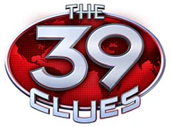

THE 39 CLUES
Maze Of Bones
Grace Cahill is dying and changes her will just before she dies. All/most of her relatives namely,
the Holt Family, Alistair Oh, Ian and Natalie Kabra, Irina Spasky, The Starlings, Jonah Wizard and his dad, Grace's grandchildren--Amy and Dan
and some others (Jose, Beatrice, Ingrid) go to the funeral. Some are called to a room by her lawyer and he tells them that the Cahill Family was a influential clan in the history of mankind.
There, they are given a choice; to receive a million dollars, or to join the hunt for the 39 Clues that will lead to unimaginable power. Amy and Dan choose to join the hunt, and travel
to Philadelphia, Boston, and ultimately Paris in search of a Clue left by Benjamin Franklin.
With them travels their Au-pair, Nellie Gomez. They find the Clue (Iron Solute) and go to the next stop; Vienna, Austria.
One False Note
In the second book, Amy, Dan and Nellie travel aboard a train to Vienna, Austria. When the Holts infiltrate the train, Saladin shreds their only lead. In Vienna, they find out a hint
which tells them to go to Wolfgang Amadeus Mozart's birthplace which is Salzburg, Austria. They find the diary of Anna Maria "Nannerl Mozart the sister of Wolfgang Amadeus Mozart
that points to Venice. In Venice, the find the missing pages which tells them to go to a friend of Mozart named Fidelio Racco and go to his house. There they find two swords made of the Clue, Tungsten.
The swords were made in Japan, and the exhibit said that Fidelio Racco went to Japan and was never heard from again, so Amy, Dan, and Nellie resolve to go there next.
The Sword Thief
Amy and Dan Cahill are about to board a plane with Nellie already inside, but Natalie and Ian Kabra bust in, take their flight, and "steal" their Identities. Later, they form an
alliance with Alistair Oh and the Kabras. They go to Seoul, Korea and go to Alistair's mansion where they search for helpful information. Amy and Ian start to fall for each other. The six of them go to
a cave with the statue of a famous person known as The Bald Rat. As the cave opens up, Amy is in shock because of the sudden opening of the cave, and Ian saves her by tackling her. They kiss
without the others seeing and all of them go inside the cave. They find the clue; gold. Ian and Natalie take the clue though Ian was hesitant, and leave the three inside with Amy feeling hurt.
Dan and Amy escape while thinking Alistair died. They go to his mansion and see the dirty white gloves he was wearing indicating that he is alive. The Cahill siblings feel that Alistair tricked them.
They go to Egypt with full knowledge that they tricked the Kabras into going to Kyrgyzstan.
Beyond The Grave
Amy and Dan go to Egypt as they realized that the Ekaterina founder, Katherine, left a Clue in Egypt. Amy and Dan create an alliance with their Uncle Alistair, although the plan ultimately fails.
They meet Grace's best friend Hillary Vale and her son Theo, who later betray Amy and Dan. However in the end, they find the Clue: Myrrh.
The Black Circle
In the fifth book, The Black Circle, Amy and Dan travel to Russia in hunt of a Clue. Pairing up with The Holts, the two teams travel to multiple cities to find this Clue.
Amy and Dan meet NRR a mysterious character who knows their parents. We discover Irina Spasky's past, and we again see the Man in Black. The Cahill siblings find the Clue Amber.
In Too Deep
Down under, in the Australian wilderness, Amy and Dan meet their uncle, Shep, and hunt down on of the Clues. In this book, Amy realizes things about the fire, and tries to remember
exactly what happened, and is surprised when she finds who was there the night of the fire. Towards the end of the book, Irina Spasky dies, sacrificing her life for Amy and Dan. The Clue is Water.
The Viper's Nest
Amy and Dan travel to South Africa, where they enter the Tomas Stronghold. After finding the Clue, which is Aloe, Dan is poisoned and Amy and Dan find out they are Madrigals. The Clue is Aloe.
The Emperor's Code
Amy and Dan travel to China with Nellie in search of the Clue. Dan gets angry at Amy and runs away because of what she said about their parents. After that, Dan gets kidnapped by the Kabras
and has to stay with Jonah Wizard until he finds Amy. Eventually, Dan and Amy meet again and go in a helicopter to the top of Mt. Everest. The Clue is not at the top, but a vial of liquids with the Janus symbol on it,
which later turns out to be the Janus serum. They realize that the final prize would make you have all the characteristics of each Cahill branch. When they get back down the mountain, they find their eighth Clue: raw silk secretion.
The Clue is Silk. Jonah asks Cora if he can stop being in the hunt.
Storm Warning
The Man In Black's identity is revealed to be Amy and Dan's secret great-uncle, Fiske Cahill. The purpose of the Madrigal branch is revealed to be to stop the branches from fighting each other and to make sure they never get too many Clues.
It is also revealed that at the time of the fire, Olivia Cahill was pregnant with her fifth child: Madeleine, whose descendants would be the Madrigals. Amy and Dan open a secret box and find the Clue Mace. Fiske tells them six more Clues,
which are Barley, Copper, Rosemary (they already knew because of Irina), Lily, Pepper, and Vinegar. Nellie becomes a Madrigal.
Into The Gauntlet
In this book, the final countdown begins. Amy and Dan must stop Isabel from recreating the Master Serum and they must unravel the secret of the Gauntlet. Also, they must make peace with a representative from each branch. However, Isabel does make
the serum, but is stopped from drinking it just in time. But, it isn't over yet, the Vespers are rising!
Vespers Rising
Follow thirteen-year-old Grace Cahill as she embarks on her very first mission during one of the most dangerous moments of the 20th century. Grace is playing with her younger brother, Fiske. We meet Beatrice and find that she hates Fiske because their mother, Edith Cahill,
died giving birth to him. Grace decodes a Morse code message from the light-post outside that warns their father, James Cahill, of the Vespers trying to regain Gideon's ring. She goes to Casablanca, where a war is occurring to find George S. Patton. When she can't bribe any of the pilots to go there,
she finds a man named Drago, who will take her to Casablanca for $20,000. When Grace only gives him $10,000 and tells him she will give the other half at the end of the trip, the man runs away. Angry, Grace kicks the man, runs to his plane and tries to get there herself.
After several cries from Drago, he agrees to take her to Casablanca on Olga, which he tells her he named after his gun. When they get to the war site, Drago is killed and tells Grace that Olga was not named after his gun but his daughter. He then tells Grace that he has not seen
her since she was a little child but he hopes that she is going to be just like Grace. Grace struggles to right the plane and it crashes. When Grace wakes up, she realizes she broke her wrist. She escorted by the military to get a cast. She then goes to the tent of George S. Patton.
Grace tells Patton the information in the letter and Patton tells Grace about the Vespers that they some aren't related by blood (similar to the Madrigals, like how they recruit people from other branches) but they all have the same goal, world domination.
Grace then tries
to find the answer for the mysterious letter she found and sees that the letter was talking about the eye of a bull statue in the Torch Cafe. When she finds that nothing is in there, Patton tells her that a Vesper agent beat them to the ring. Grace sees a bulge in Patton's pocket and discovers
that he is the Vesper agent.
While Patton is sleeping, Grace steals the ring and tells the guards that she is anxious to get moving and wants to go. The guards take her to Lisbon, where she is now under protected ground. When Patton wakes up, he discovers that he has been beaten
by a thirteen year old girl and is infuriated.
Grace then goes home, reunited with baby Fiske.
CAHILLS VS. VESPERS
The Medusa Plot
After the mysterious Vespers kidnap Cahills around the globe, they order Amy and Dan to steal a priceless painting in exchange for the hostages. The siblings rush to Italy to execute a heist that rivals the most famous art thefts in history.
There's just one problem the painting they steal is a fake. With the clock ticking, Amy and Dan have to track down the real painting before one of Cahill hostages pays the ultimate price.
King's Ransom
When seven members of Amy and Dan Cahill's family are kidnapped by a sinister organization known as the Vespers, they vow to stop at nothing to bring the hostages home. But then the ransom comes in and the Vespers demand the impossible.
Amy and Dan have just days to track down and steal an ancient map that no one has seen for half a century. Now Amy and Dan are on a desperate search that will lead them to the Nazis, spies, a mad king and some of history's dirtiest secrets.
The Dead Of Night
The Vespers have crossed a line. Amy and Dan were devastated when the Vespers kidnapped seven Cahills around the world, holding them hostage until Amy and Dan delivers an impossible ransom. But at least the hostages were Cahills members
of the world's most powerful family, trained to face disaster. But now the Vespers have kidnapped Atticus Rosenbloom, an innocent 11-year-old boy and Dan's only friend. Dan and Amy find themselves in the struggle of their lives.
Because if they can't outwit the Vespers, the unthinkable will happen.
Shatterproof
Thirteen-year-old Dan Cahill and his older sister, Amy, have committed a string of thefts that lands them on Interpol's Most Wanted list. But the crimes are not Amy and Dan's fault. A shadowy organization known as the Vespers has kidnapped seven members of the Cahill family.
If Amy and Dan don't deliver a series of bizarre ransoms, it's lights out for the hostages. Until now, Amy and Dan have stayed one step ahead of the police and managed to keep their family safe. But all that's about to change. Vesper One commands them to steal the Golden Jubilee,
one of the the worlds' largest diamonds. What Amy and Dan don't know is that the Jubilee is a setup ... and someone is going to die.
Trust No One
For the first time since leaving Attleboro, the fight against the Vespers has brought Amy and Dan back to the U.S, but their homecoming is anything but sweet. The siblings thought nothing could hurt more than having their loved ones kidnapped by a cruel and powerful enemy,
but the Vespers have landed their most serious blow yet a blow that strikes at the very heart of the Cahill family. There's a Vesper mole in their inner circle. Amy and Dan need to smoke out the traitor before the next hostage dies. But even if they do uncover the mole, the danger won't stop there.
Vesper One's next assignment will take the Cahills somewhere crawling with dangerous enemies. They have just days to complete their next assignment and discover who has their back ... and who wants to stick a knife into it.
Day Of Doom
It started with a kidnapping. A shadowy organization known only as the Vespers snatched seven members of the Cahill family and demanded a series of bizarre ransoms from around the world. Thirteen-year-old Dan Cahill and his older sister Amy began a global treasure hunt,
determined to bring back whatever Vesper One needed, so long as it kept the hostages safe. But when they deliver the last ransom, Amy and Dan discover Vesper One's terrifying endgame. The objects he demanded are vital pieces in a Vesper plot that will harm millions of innocent people.
Now the two siblings and their friends are in an all-out sprint to stop Vesper One ... before the whole world goes BOOM.
UNSTOPPABLE
Nowhere To Run
For five hundred years, they have guarded the 39 Clues, thirty-nine ingredients in a serum that transforms whomever takes it into the most powerful person on earth. If the serum got into the wrong hands, the disaster would rock the world.
So certain Cahills have always made it their mission to keep the serum safe, buried, locked away. Until now. Thirteen-year-old Dan Cahill and his older sister, Amy, are the latest guardians of the Clues. They think they've done everything right, but a tiny mistake leads to catastrophe.
The serum is missing and Dan and Amy have to get it back and stop who stole it ... before it's game over. For everyone.
Breakaway
As a member of the most powerful family history has ever known, thirteen-year-old Dan Cahill has been shot at, kidnapped, and even thrown into a pit with a deadly snake. He's survived it all due to luck, smarts, and his older sister, Amy, who always sticks by his side.
Now Dan and Amy are facing their greatest threat yet, an enemy who has found a way to use the source of the Cahill family power against them. To stop him, Dan and Amy must set out on a desperate mission that will take them from one of the world's hottest regions all the way
to the frozen blast of the Arctic Circle. But with the enemy closing in , Dan finds himself facing the one terror he never imagined - being betrayed by his own sister.
Countdown
The clock has finally run out for the Cahills. As the leaders of the world's most powerful family, Dan and Amy have been in the cross-hairs for too long. It was only a matter of time until luck failed them. Media tycoon and presidential candidate J. Rutherford Pierce
has set his sights on destroying the siblings. And after numerous close calls, it looks like he's about to get his wish. Now Dan is hopelessly trapped and nothing can save him. Nothing except unleashing an evil the Cahills have spent centuries trying to hide. The Cahills have always had a secret weapon,
but it comes at a great cost. With everything to lose, Amy has to ask herself the question that haunts her nightmares: Just how far is she willing to go to save her little brother?
Flashpoint
Tick tock. Sixteen-year-old Amy Cahill only has few days to live. There's a poison coursing through her, and her only chance is to collect ingredients for an antidote. Too bad the antidote ingredients are scattered around the world. And too bad that survival is by far Amy's smallest problem.
The antidote she needs is also the only thing capable of stopping a deadly enemy. J. Rutherford Pierce is on the brink of becoming the most powerful man in the world, and if he does, no one will be safe. Amy and her younger brother, Dan, will do everything it takes to bring Pierce down.
Even if Amy must pay the ultimate price.
DOUBLECROSS
Mission Titanic
At only seventeen years old, Ian Kabra is head of the Cahills, the most powerful family in the world. He has presidents on speed dial, generals at his beck and call. Ian knows he's an ideal leader and the only man enough for the job. There's just one small problem: He's already messed up big-time.
A Cahill from the past calling himself the Outcast has risen to challenge Ian with an impossible test. The Outcast has re-created four of history's greatest disasters and dared Ian to stop him. If Ian and his allies can't decipher the Outcast's hints in time, innocent people will die.
Ian's only chance to beat the Outcast is to track down his former allies, Amy and Dan. But finding Amy and Dan will demand from Ian an impossible sacrifice.
Mission Hindenburg
The Cahills are the world's most powerful family, but their strength is being tested. A sinister man calling himself The Outcast has targeted the family and set them an impossible test. He's recreating four of history's worst disasters and challenging the young Cahills to find and stop the tragedies
before it's too late. Now, with one disaster behind them, siblings Dan and Amy Cahill and their friends have just days to discover what the Outcast's next move will be. Their frantic search seems to be pointing toward a terrifying air disaster, the explosion of the Hindenburg airship.
But no one travels by airship anymore -- what do the Outcast's cryptic messages mean? The young Cahills must split up and take to the skies to try to find the answer ... before their whole world comes crashing down.
Mission Hurricane
Thirteen-year-old Dan Cahill and his older sister, Amy, know that a disaster is about to strike the world. They know they are the only ones who can stop it, and they know they may already be too late. The person behind the disaster is their own relative, a man who calls himself The Outcast.
He's already re-created two of history's worst disasters, and is only biding his time before he strikes again. The clues that the Cahill kids have gathered suggest that the Outcast's latest disaster is modeled after Hurricane Katrina. But what city will he target? And how can anyone conjure up a hurricane?
Dan and Amy have no answers and very little time to find them. All they can count on is a tidal wave of trouble coming, and only them to stand in its way.
Mission Atomic
Thirteen-year-old Dan Cahill and his older sister, Amy, are running out of time. An exiled Cahill known as the Outcast has already recreated three of history's worst disasters, and he's saved the worst for last. If Dan and Amy can't find and stop the Outcast fast, he will initiate a full-scale nuclear meltdown.
But as Dan and Amy race around the world, they discover something horrifying. The Outcast's disasters are only a smokescreen to cover up his true plan, a diabolical revenge on the family that betrayed him. Soon Amy and Dan will have to confront a hard truth: Sometimes the only way to save the world is to
sacrifice everything you love.
SUPERSPECIAL
Outbreak
Plot: Amy, Dan, Ian, Jonah, Cara and Hamilton are chasing a collector who happens to have stolen a historical silver star. They engage with a private detective who so happens to want to sell the silver star. When they go back into the mansion in Attleboro, they are visited by two CIA agents, Agent Pratt and Agent Gimler. The agents show the Cahills an image of Sinead stealing a genetically modified version of goat pox, one that affects humans. The Cahills then accept the job the CIA agents have for them, to capture Sinead and stop an outbreak, hence the title Outbreak. One team, Cara, Ian, Hamilton and Jonah go to Sinead's previous house. The other, to Havana, Cuba to find both Sinead and Dr. Miller, the creator of the modified goat pox. Team one is in Sinead's old base or lab when a bunch of people bust in with hazmat suits and weapons. Things take a turn for the worst when they accidentally get infected with the modified goat pox. Then it is revealed here that Sinead would do something to cure the Outbreak herself, as she wanted to redeem herself. After that, she goes to the promenade to dance and breathe the fresh air off the ocean. The people around her were dancing, so she decided to do the same to avoid suspicion. Then, she inconspicuously dropped a vial containing the modified goat pox onto the sand. She then covered her nose and mouth and stepped on it, crushing it. Team two was in Havana where they finally located Dr. Nueman's apartment. An ex-Cahill who had fled to Cuba on their side instead of siding with Grace in America during the Cuban Revolution. His daughter greeted them, telling them that Dr. Nueman was busy attending to patients. They then left to go to Hermanos Ameijeiras Hospital. They find out from the doctor that the modified goat pox was modeled after a seventeenth-century Italian disease known as tarantism. They also learn that the goat pox is a baculovirus modified to infect humans. They find out that Dr. Miller is in Old Havana. Then, the story goes to Attleboro with Nellie going back to the mansion, where she was alone with Saladin. Then, she switches on a monitor when she finds out that someone was trying to break in into the mansion. However, all she saw was the front gate opened. Then, she panned the camera which then shows Ian's car. Team one had returned, but they were all infected with the modified goat pox, and they were all dancing.
THE CAHILL FILES
Operation Trinity
It follows the story of a boy named Matheus Jacobs. One day, on a seemingly peaceful day, a messenger from King Philip of France sent a letter. After reading it, his father and mother, Joost and Anna, went for a private talk with Matheus. They explained why they want him to become an altar boy: Jan Van Eyck's altarpiece needs to be protected from the Vespers, the rebellion on that time probably caused by them so they had a chance to steal it, and the only way to protect it is to stay close with the object by becoming an altar boy. So, Matheus set off to Ghent, to Saint Bavo Cathedral. That night, after he arrives and tried to get sleep, he sneaks outside to see the altarpiece, and meets with Father Gerard. The next day, Father asks him to send a package for an errand. On his way, he meets with mobs, and goes back home to his parents, to see if they are safe. In reunion time, Matheus meets with a black-hooded man, who he saw from the crowd of mobs. He kills Anna, and escapes. Matheus rushes to Ghent to save the altarpiece before the Vespers take it. He works together with Father Gerard to hide the paintings in the bell tower, before the mobs could destroy it. The next morning, the riot is over. Matheus and Father Gerard return the altarpiece back. It seems that the Vespers want the altarpiece because it contains a map to something unimaginable--there are some Hebrew symbols that will give away the information if they are translated correctly.
It follows the story of Grace Cahill, after the events of taking Gideon's ring from George Patton on ongoing war. One day, she receives two letters, one is from her favorite teacher, Timothy Blythe, who joined the army. The letter talks about the altarpiece who have gone missing for years, and she has to locate it. At Miss Harper's School of Girls, there's a new teacher of art history, Mademoiselle Hubert. She teaches the girls, and gets a full attention to Grace. On a slide showing the altarpiece, the teacher snatches the letter from Mr. Blythe from Grace. Later, Grace sneaks into her office to retrieve it. She finds a letter from V4 to Hubert, saying that they got the altarpiece and it seems Hubert replaced her old teacher, just to gain information of the altarpiece before killing her. There was a shootout, and Grace survives. Then she goes to Paris, to meet Rosa Valland, the curator of the Louvre museum, by sneaking into a Navy boat. Rosa tells her that the altarpiece contains a secret, and it's now with the Nazis in Austria. She is asked to rescue the altarpiece before the Nazis destroy it. Jane Sperling takes Grace to Luftwaffe, German Air Force. From there, she works alone. She hides in a wagon that carried dynamites to a mine, possibly a place where the altarpiece is kept. She is right. After she got out of the wagon and into a cart to the mine, she finds the altarpiece. She decided to block the cave and wait for the Allies to come, and the plan works. She succeeds in saving the altarpiece.
In an auction house, Ian bids 16,400,000 pounds for the Self Portrait of Jan Van Eyck, and wins the auction. He later got picked up by Isabel on a helicopter. Isabel has a mission for them in Belgium, to take some files from the University of Ghent. They do, but they are caught. Ian realizes his mother forgot to send backup. However, he and Natalie track her down. The mission to retrieve the files at the University of Ghent is actually a diversion for Isabel to destroy the altarpiece. She is just about to destroy the altarpiece when Grace walks in and threatens them. Ian tells his mother not to, and she brings them out. On the way, Ian looks at Grace, who winks at him. Grace is left alone and begins to scan the altarpiece. She discovers important information, which is not revealed. "They will move the earth" is the message she scanned on the altarpiece. She takes a final look at it, then heads back to Massachusetts.
The Submarine Job
It all started when Fiske Cahill got bullied by Eric Landry and his gang, shoving his head into a toilet. Outside, when Fiske is going home from campus, the secretary delivers him a telegram from Grace. Once realizing that Grace is in danger, Fiske decides to leave immediately. The headmaster isn't available, so Fiske goes to his dorm to think of some way to escape. But in reality, the secretary is a Vesper, and she's lying about the headmaster's meeting. Fiske escapes through his dorm room and uses someone's bicycle to make his way to the airport. The secretary is waiting in the middle of the road, persuading him not to go, but Fiske gets away from her. At the airport with Pete, he blasts off into the air.
At the Willard Hotel in Washington D.C., Fiske meets up with Grace. She has a very risky plan for Fiske: keep the ring safe for a few days and send it to a safe place, while being disguised as the grandson of Admiral King on the USS Nautilus, a nuclear submarine. After he's safe in San Juan, he should wait for Grace to give the ring back to her. At first, Fiske rejects the plan, but he's the only hope, so he accepts. On May 10, 1955, Fiske boards the submarine with Lieutenant Herman Oppowitz who will be his seafather during the trip. Fiske places his things in his suite.
He has a new friend, George Carmel, and works in the torpedo room with Ralph Kane. Later on, the sub moves, and Fiske begins his life on the submarine. That night, his bunk is ransacked. He knows someone is after him. The ring is hidden in Fiske's suit. Second casualties, when Fiske and Ralph find trouble in the torpedo room, the light goes out. Fiske is on the stairs, so he has to stay. Ralph uses it as an opportunity to attack him as Ralph was the one who locked the door. When Oppowitz goes in, he asks what happened. Fiske said Ralph attacked him, but Ralph said he was protecting himself. Oppowitz believes Kane to be a good man. The next thing you know, George Carmel is attacked. George stated Kane attacked him, for being close to Fiske. So, Kane is asked to head for the XO's office for futher questioning.
The news about Kane's act spreads among the sailors. The trip to Puerto Rico almost ends, and Fiske wants to see Oppowitz. By the time he reaches the officer's bunker, the officer is already dead, electrocuted. He is scared, tell the news to the commander and George. Then, Fiske goes to confront Ralph. Now, he thinks Ralph is a Vesper, and he told Oppowitz is dead. But, Ralph has no idea about that. Someone who should be in MIT or Harvard, but instead choose to work in the sub, is a Vesper. And that's.... George. He confronts Fiske and Ralph. Fiske and George go on the chase. Later on, Ralph ran on Fiske. He said he was accused of hitting George, so that will make Fiske believe Ralph is a Vesper. The chase back then make the reactor unstable, and the boat might blow up. Soon, there's news that the reactor is stable. Fiske tells Ralph that he is in the sub because he is hiding, and he wants to get off the sub before George kills him and takes the ring.
Ralph helps Fiske to escape, but George was there. Another shocking truth: Ralph is a Vesper. After much confusion, Ralph makes George and Fiske get tossed out of the sub. Fiske survives, but George doesn't. He accomplishes the mission, but still feels sorry about Lieutenant Oppowitz's death.
Soon after, Fiske goes back to school. He receives a package from Ralph Kane: a pin for serving the Navy and a letter from himself. Ralph wasn't a Vesper after all.
The Redcoat Chase
In his home, Frederick makes a prank by switching sugar with salt, then he got busted. His punishment: working in the barn. Suddenly, his parents come to him and tell everything about the Cahills and the Vespers, then leave. Meanwhile, in the President's House, Dolley Madison is frantically looking for a map, a map leading to Gideon's ring, while her messengers try to escort her to safety. Outside, Chief Cyrus Ramsay was on the run with General V - the leader of the British troops whose face is marked with a V. Chief Ramsay is heading to the Presidental House.
That night, there is a wounded soldier who comes into Frederick's private apartments. He is dying, and he needed to talk to the innkeepers, who are Frederick's parents. Frederick says that they are away, and he can help. He is asked to deliver a message to the Presidental House, otherwise the Vespers would win. "Map.. Gideon's ring. Find it. The color of old age. The roots of our Father." he says, and then, "God bless you, Young Madrigal." and passes away. It is Ramsey, and Frederick knew General V is hunting him down. The boy hides the soldier's body in the barn with the help of his servant Amos. Then, Frederick goes to deliver the message
He managed to get into the drawing room (facing troubles along the way). He is looking for the president, but the president is nowhere to be found. He only meets with the First Lady Dolley Madison, who is left behind with a gardener as a watcher. Frederick finally delivers the message to her. Now, they both pack and take a glimpse of a potrait of George Washington. Silver is the color of old age, and Father means the father of the nation. The map could be the painting. Both him and Dolley pull out the painting, but General V comes. The twosome get bounded in the basement. Soon, General V comes to them and tells the painting has no map. They are going to help General V in forced way. When the general is away, Dolley and Frederick escape through the back window. Dolley makes it, but Frederick does not. General V catches him before he left. The map is tossed to Dolley, and she runs. Frederick makes General V believe that the map is on the ax used to cut the frame of the painting before. As the general is satisfied, the house will be burned... along with Frederick!
The British burn the house. Frederick tried to find the map in the silver room if there is still time. There is a secret hatch leading him to find a hatbox containing a silver urn. He finally finds the map inside the urn. He made his way out of the burning President House, and watches it being engulfed with flames and falls asleep.
Upon waking up in the morning, General V comes back to Frederick again. Frederick makes it to the river and swims to his escape. He makes all his way to the camp, to meet Dolley Madison and his parents. The mission to retrieve the map and protect it from the Vesper is a success.
The Houdini Escape
Janus famous escapologist, Harry Houdini. That night, he is performing his magic trick in cards with the tale of the four kings, but it all goes wrong. Before, the queen of hearts is asked to be kept by a boy, but when asked to reveal it, the card is gone. The audience mutter about wasting their money to a hack. Actually, Harry has made a mistake: he picked the wrong boy. Thaddeus, the ringmaster, comes to him, angry. If Harry makes another failure, then he is off the job. Then, Harry leaves for Manhattan. When he arrives home, Harry is shocked to found his house ransacked. His parents talks about Harry's job, which upsets about making living from magic. With this, Harry intends not to do magic anymore, instead working in a necktie factory.
Things gets worse when Harry works in the necktie factory. He cuts in the wrong angle and he loses the job. He goes back home and he sees three men entering the house and talk to his father. Harry eavesdrop on the conversation: his father owes the men money. After the men exit the house, Harry decides to trail them. The trail ends the men talked to Chief Officer McKane. A fight ensues, and Harry tries to hide, but later, he gets busted. The three men grabs him and sail on the Hudson River to drown Harry. They tie him up with rope, then drop him in the water. He wiggles and he released the rope that bounds him. He remains silent until the three men are gone.
His father is mad, and then without thinking, he mentions the Vespers, resulting in him telling everything: life is not easy in Hungary, especially for Jews. He wants to go to America, but when the paper came through, he still did not have money for the passage. Therefore, his father loaned the money from the Vespers to buy the ticket, then left money for Harry, his mother and siblings to catch up later. Everything is explained. Harry has to do something. He has to remain hidden until Zoltan and his henchmen (the Vespers) return to Europe. Harry promises he will do anything to take care of the family.
That day, during his performance, he sees Zoltan and his henchmen are among the audiences. So he came up with a plan. The trick is to provide all the audience a card, put the lamp on the middle, turn it off, then shake the tent and run for his life. It is not even a trick; it is a way to escape. On the run, the Vespers catch up with him. Zoltan is surprised to find Harry Houdini still alive. So, they make a deal. One task to help the Vespers, or Harry's beloved family will be harmed. With no other choice but to consent, Harry chooses to help. The first plan is the observation. He, along with his best friend Jacob, will get inside and view possible routes and exits, and of course the target. After that, Harry parts away with Jacob, and heads for rendezvous with the Vespers for the mission.
The heist is on. Bjorn stuffs in Harry inside a package in order to make it look like a delivery. Harry is remain silence until everyone is out, so when they are out, he gets out of the package and makes his way to the target. He replaces the real terra-cotta jar with the fake one in Greek and Roman arts. The real has some markings on the base (it could be a map). While escaping the building, he gets spotted by a guard, but fortunately, he escapes. Later, he makes his way to the docks. Harry hands over the jar to Zoltan, but Zoltan has something in mind again. He wants Harry to join the Vespers. Once Harry on the boat, Zoltan is drowning him again (since he already sent a telegram to V-1 that Harry is drowned, and he cannot tell lies). This time with chains, the drowning will supposedly be fatal. Once he is underwater, he uses his famous talent to escape and hides, causing the Vespers to claim him dead. When the Vespers have gone, Harry is safe. He meets with Jacob at the pier. It seems it is not Harry alone doing the trick. Jacob managed to switch the urns and take blackmail money from the Vespers while Harry made a distraction. Everything has come to a good end.
Harry decides to become a magician after all, and together with Jacob, they entertain Coney Island with stunning magic they use from the blackmail money.
Silent Night
Rupert Davenport, a Lucian and Ian and Natalie's ancestor. Inside the dining room, the family gathered up to hear Albert, Rupert's brother, about how he become an officer, and Rupert tells how their test will be postponed until Christmas holidays. Because Albert always has everyone's attention, Rupert suddenly reacts; he will join the war. Everyone thinks he can't do it, but Rupert is sure he can. In his mind, he wants to prove everyone that he's a real Lucian.
Rupert sneaks off to France, and plans to join the war before it ends. He rides on a farmer's car, since all cars around are not available. The farmer refuses to drive him to the army camp, so he leaves Rupert on the road. Rupert walks a few more miles to reach the camp, and goes to Brigadier-General Keswith to introduce himself as Special Officer Davenport. The brigadier sends him to Colonel Bullsworth at the trenches. First task from him: deliver a message to Captain McIntyre.
After the starter mission, he is later called for a real mission. An Ekat professor named Dr. Woolsey has been kidnapped by the Germans and forced to create weapons. If he succeeds, then the war will continue. Rupert - Lucian, and Major Thompson - Tomas, plan to save the professor and destroy the lab. Their first leg of the mission is to find a Janus journalist, Marie. After that, they go across the Lys River and into the factory. Breaking into the factory is no easy task, because there are many guards in the area. They have to wait until night.
RAPID FIRE
Rapid Fire 1: Legacy
Plot: On Christmas morning, Grace Cahill is diagnosed with cancer and given six months to live. She contemplates revising her will to begin the Clue Hunt, but decides not to.
In Boston, Dan and Amy wait for Grace to call. Bored, Dan leaves their apartment to shoot off bottle rockets, and Amy follows behind to keep him out of trouble. The pair are followed and chased by men in motorcycle outfits who are trying to kidnap them, and the siblings end up hiding in a dumpster, surrounded by the mysterious men. Dan fires his bottle rockets at the men, buying time for the Cahills to temporarily escape.
As Amy and Dan hide behind a fence, Grace calls, and is terrified when Dan mentions the "Vespas". Using more bottle rockets, Dan and Amy are able to escape, and the police arrive and drive the Cahills to Grace's mansion. Dan and Amy open their presents from Grace, while Grace makes a few phone calls: one instructing an unnamed listener to hire Nellie Gomez as Amy and Dan's new Au-pair, and the other to Astrid Rosenbloom.
Rapid Fire 2: Ignition
Plot: Ian and Natalie Kabra arrive at Cahill Manor to attend Grace Cahill's funeral, and interact with many of the Cahills who would later participate in the Clue Hunt. They take the opportunity to evaluate their potential competition, but determine that, even though their mother had warned them about Amy and Dan Cahill, they were not a threat. Once the funeral begins, Jonah Wizard also notices the Cahill siblings, remembering a similar warning his mother had made. He, like many others, shovels a shovelful of dirt onto Grace's casket. Professor Astrid Rosenbloom, however, does not.
Astrid, like some others, is invited to a reading of Grace's will. Through a video, Grace offers a choice to the Cahills in the room: one million dollars, or the first Clue. Amy and Dan, along with six other teams, accept the Clue, and the teams disperse to search for Clues. William McIntyre leads Astrid to Grace's office, where the two discuss the Vespers. William warns Astrid that the Vespers are coming for her and gives her a dossier of Grace's intelligence on the Vespers. Just then, the pair discover Ingrid trapped in a nearby broom closet, who reveals that she was kidnapped and replaced by a Vesper.
The Holt family ransacks Cahill Manor, looking for their next Clue. Eisenhower Holt directs his son, Hamilton, to light the mansion on fire, and he obeys. As he flees the house, Hamilton notices the imposter of Ingrid trapped in the floorboards, and rescues her. As the house burns, Hamilton realizes that the Clue Hunt has officially begun.
Rapid Fire 3: Hunted
Plot: From her office, the watcher, a Vesper agent, monitors the Clue Hunt, searching for a Cahill who she could convince to defect to the Vespers.
In Philadelphia, Ted Starling arrives at the Franklin Institute with his siblings, Sinead and Ned, in pursuit of Amy and Dan Cahill. Ted breaks into a storage room containing old documents related to Benjamin Franklin, searching for a Clue, but finds nothing. Ted's quick thinking during a skirmish with a security guard draws the attention of the watcher, though his close bond with his siblings complicates matters.
Some time later, the watcher turns her attention to Jonah Wizard, who is searching for a Clue in Caracas, Venezuela. Jonah breaks into the National Pantheon, narrowly escaping guards, and reaches the tomb of Simón Bolívar. Within the coffin, Jonah discovers a Clue, Lead. The watcher, who had alerted security of Jonah's presence, is impressed by his escape.
Hamilton Holt and the rest of the Holt family search for Clues in the Arctic. Eisenhower spots backpackers behind them and, believing they are also Clue hunters, prepares to attack. Hamilton isn't convinced and refuses to join the plan, storming off. Soon, Hamilton becomes lost in the snow and follows a man with a flashlight, only to be lead to a polar bear. Hamilton distracts the polar bear with his backpack, buying time to escape. It is revealed that the man with a flashlight was a Vesper agent, who had led Hamilton to the bear as a test for the watcher.
On the other side of the world, Ian Kabra sneaks into Angkor Wat, despite sightings of graffiti of the letter "M". Ian is assaulted by mysterious attackers in black, but takes one hostage, demanding the hidden Clue. One of the mysterious people in black claims that the Clue was taken long ago. Ian uses his hostage to escape Angkor Wat. The watcher reviews Ian's performance, determining that he would make the best mole within the Cahill family.
Rapid Fire 4: Crushed
Plot: Seven months after the end of the Clue Hunt, Natalie Kabra catches her brother, Ian, practicing a confession of love intended for Amy Cahill, his former nemesis. Ian makes plans to fly to America to make his confession, but things change when the siblings learn that their mother, Isabel Kabra, had recently been released from prison on parole. Ian cancels the flight, believing that Amy would not want to see the son of her parents' murderer. He discusses matters with Natalie, waffling between going and not going, before eventually deciding to leave for Boston to see Amy.
The night before Ian's flight, the Kabra siblings fight, and Natalie storms off. Ian hears a noise in the Lucian wing of the mansion and chases an intruder onto the roof. The intruder reveals herself to be Isabel, and a conflicted Ian chooses to let her go. Ashamed of himself, Ian calls Amy and cancels their dinner plans. Amy is heartbroken, but, after a pep talk from Nellie Gomez, decides to move on from Ian, and calls Evan Tolliver.
Rapid Fire 5: Turbulence
(No Content Available)
Rapid Fire 6: Invasion
(No Content Available)
Rapid Fire 7: Fireworks
(No Content Available)
ADDITIONAL BOOKS
8.1 The Black Book Of Buried Secrets
Description: This book is the ultimate source of Cahill knowledge. It contains every secret, every Cahill weapon and gadget, all the strongholds, and each agent and founder. In this book, you will discover the true story of Madeleine Cahill as well as what happened after Isabel Kabra was charged with murder. Nothing has been held back. Seven Cahill Agents came together to bring you this book, betraying their branches and their most deeply held beliefs. They did it because there is an enemy approaching, far more powerful than the Cahills.
8.2 Agent Handbook
Sypnosis: The Cahills are the most powerful family in the world, but the source of their power has been lost scattered around the globe in the form of 39 Clues. The hunt for the Clues has begun and now is YOUR chance to shape history. But, beware the Clues are in some of the most dangerous locations on earth, hidden by the most famous (and sneakiest) figures of the past 500 years. This Agent Handbook is your secret weapon and it contains all the information your rivals don't want you to know about the Cahills and the Clues. Just make sure it doesn't fall into enemy hands...
8.3 Midnight Ride
The Cahills are the most powerful family the world has ever known. Its members, which include everyone from Benjamin Franklin to Marie Curie, have shaped history through their global hunt for the 39 Clues the key to the clan's immense power.
So when the family's rival factions gather for a holiday celebration, everyone is on high alert. Everyone, that is, except for thirteen-year-old Amy and her ten-year-old brother, Dan. The siblings are the only Cahills who don't know about their legacy . . . and how far their relatives will go to keep them in the dark.
Amy and Dan expect to spend Christmas Eve like they always do trying not to embarrass themselves in front of the world leaders and celebrities who attend their grandmother's annual party. But when an intruder steals an heirloom that once belonged to Paul Revere, Amy and Dan must call on skills they didn't realize they had to stop the enemy. . . and uncover dangerous secrets about their mysterious family.
8.4 Worlds Collide
(No Content Available)